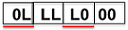
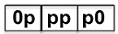

xMode()
X-mode is an operating mode of a tester in which a tester cycle contains multiple device
cycles. The parameter in xMode() is specified by the number of device cycles in
each tester cycle. For example, you specify xMode(4), which means that there are
four device cycles in one tester cycle.
If you need to use xMode() for specific pins, you must define consecutive
waveforms in the corresponding wavetable. For the write mode, the definition range is from
"00...0" to "11...1". If the waveform contains "Z" or "X", like "10Z1", you can assign any
physical index. For the read mode, the definition range is from "LL...L" to "HH...H". If the
waveform contains "Z" or "X", like "LHXL", you can assign any physical index. For the
SmartRDI-suggested default dvc "." for doing nothing, you must set it to "..." that the dot
length is equal to the Xmode value for the correct Xmode recognition of error
map result.
If you do
not specify a parameter in xMode(), the default value is set to
1.
Syntax
xMode(int Xmode);
Parameter |
Description |
|---|---|
Xmode |
The number of device cycles in each tester cycle. |
- The fail count and fail position are about "compare edge" (not tester cycle). So they supports xMode directly.
- The xMode parameter for a pin must be correct, otherwise the result for the pin will not be correct.
- The parameter specified in the function, such as startCyc and cycRange, is about user cycles (edge), not tester cycles. This setting is critical when xMode is set to be greater than 1.
- For one pin, the xMode must remain the same in different labels in burst; otherwise the results might be wrong.
- For a specified pin, in one RDI_BEGIN/RDI_END block, its xMode number must remain the same value, no matter it is for a SmartRDI command or in the user pattern.
- In the wavetable, the length of the device cycle name must align with the xMode() value. For example, if you set xMode to xMode(2), the dvc must correspondingly have two letters, such as "LL", "00", "11", "LL". Even the dvc of the physical index f, which normal value is "." with SmartRDI, must be ".." for xMode(2). Otherwise SmarTest cannot recognize the correct xMode value from pattern.
Example
RDI_BEGIN();
rdi.smartVec().pin("DATA1").fillBit(1,4,2).xMode(2).execute();
rdi.smartVec().pin("DATA3").readBit(4,2).xMode(2).execute();
rdi.smartVec().pin("DATA5").writeData(0x54,8,4).xMode(4).execute();
rdi.smartVec().pin("DATA7").readData(8,4).xMode(4).execute();
RDI_END();Data from readBit(), readData(), expectBit(), or expectData() can cross over device cycles.
RDI_BEGIN();
rdi.smartVec().pin("A").expectData(0,4,1).defaultBit(0)
.xMode(2).bitLength(8)
.execute();
RDI_END();The result vector:

Supporting a string from fillBit() and defaultBit().
RDI_BEGIN();
rdi.smartVec().pin("A").defaultBit(0).fillBit("p",4,1)
.xMode(2).bitLength(6)
.execute();
RDI_END();The result vector:

Functional changes
- Introduced in SmartRDI 2.3.0
- SmartRDI 2.4.3: Support for data crossing over device cycles and combining string into the vector.